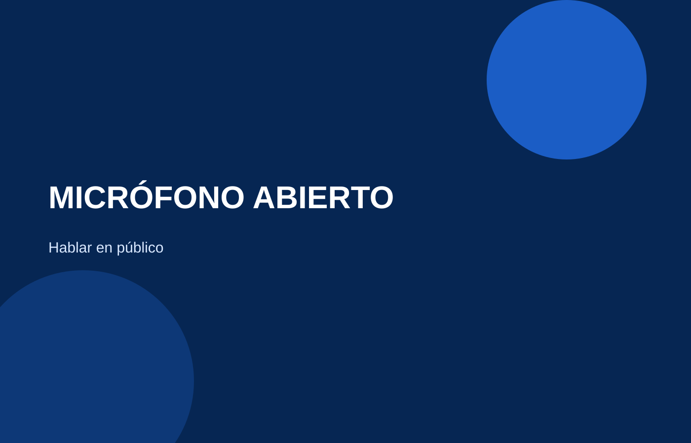
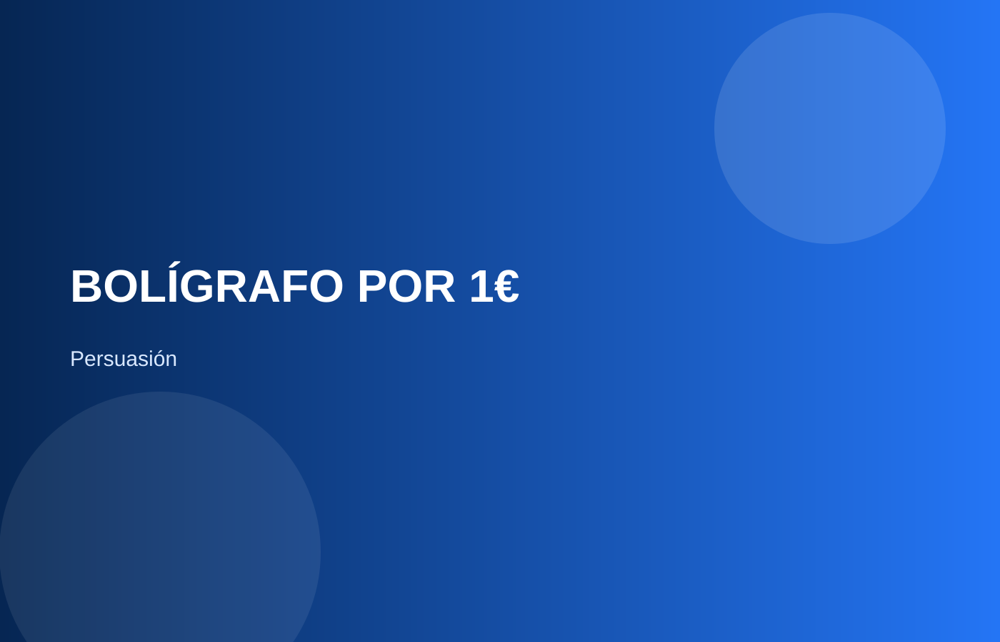
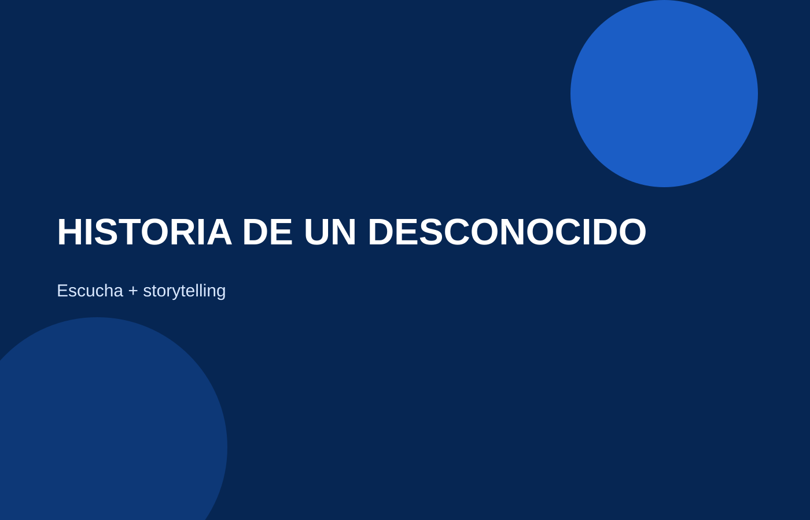
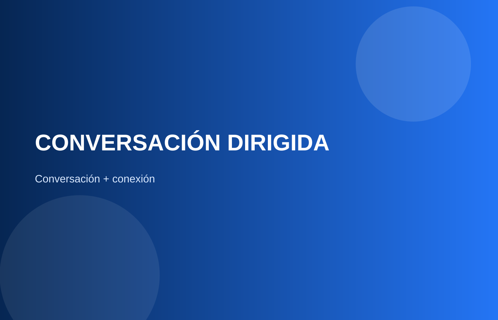

La comunicación no es una sola habilidad.
Cada evento está diseñado para entrenar diferentes áreas de tu comunicación a través de retos, dinámicas y experiencias reales.
Conversación y conexiónHablar en públicoImprovisaciónPersuasión y argumentaciónEscucha y storytellingLenguaje no verbal
Un evento puede llevarte a debatir bajo presión. Otro a hablar con desconocidos. Otro a contar historias, improvisar o persuadir. La idea es entrenar diferentes partes de tu comunicación, no repetir siempre lo mismo.



